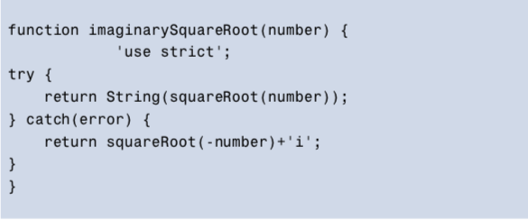

JavaScript is a fairly forgiving language when it comes to errors; it didn’t implement exceptions at all until ECMAScript version 3. Instead of alerting a user to an error in a program, it just failed silently in the background, and this is sometimes still the case. It might seem like a good idea at first, but the error might give unexpected or incorrect results that nobody spots, or lurk in the background for a long time before causing the program to crash spectacularly. Failing silently makes errors difficult to spot and longer to track down. For this reason, a ninja programmer should ensure that the code they write fails loudly in development so any errors can be identified and fixed quickly. In production, a ninja programmer should try to make the code fail gracefully (although not completely silently ― we still need to know there’s an error), so the user experience is not affected, if possible. This is achieved by making sure exceptions are caught and dealt with, and code is tested rigorously.
A good video to remember how to use chrome for debugging
When an exception occurs, the program terminates with an error message. This is ideal in development as it allows us to identify and fix errors. In production, however, it will appear as if the program has crashed, which does not reflect well on a ninja programmer. It is possible to handle exceptions gracefully by catching the error. Any errors can be hidden from users, but still identified. We can then deal with the error appropriately ― perhaps even ignore it ― and keep the program running.
try, catch, and finally
This video helps me to undestand better
Jest11 is a TDD framework, created by Facebook, that has gained a lot of popularity recently. It makes it easy to create and run tests by providing helper methods for common test assertions.
This is a good review about Jest. 8 Things That Make Jest the Best React Testing Framework